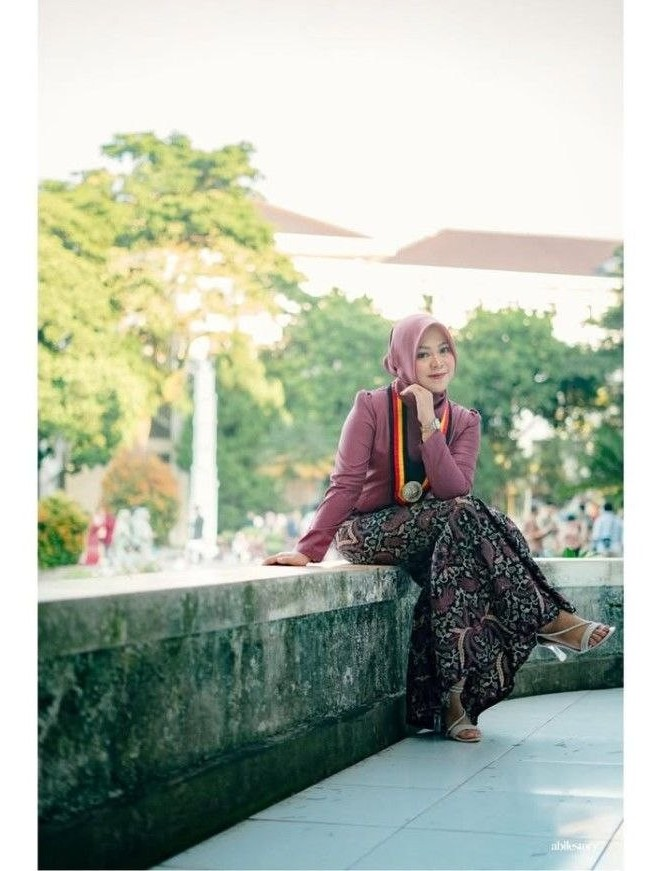
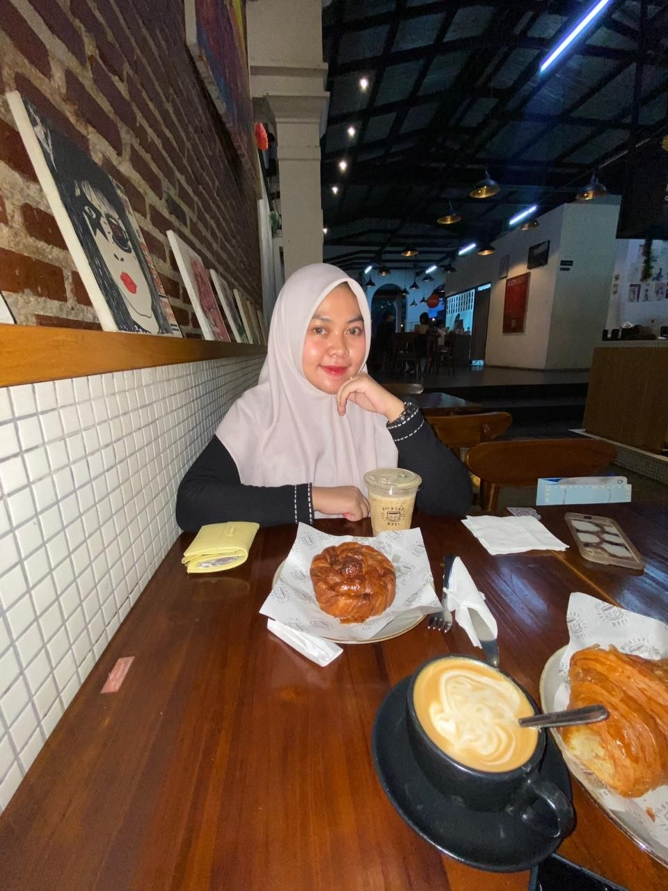
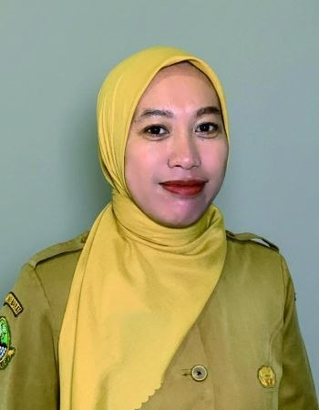
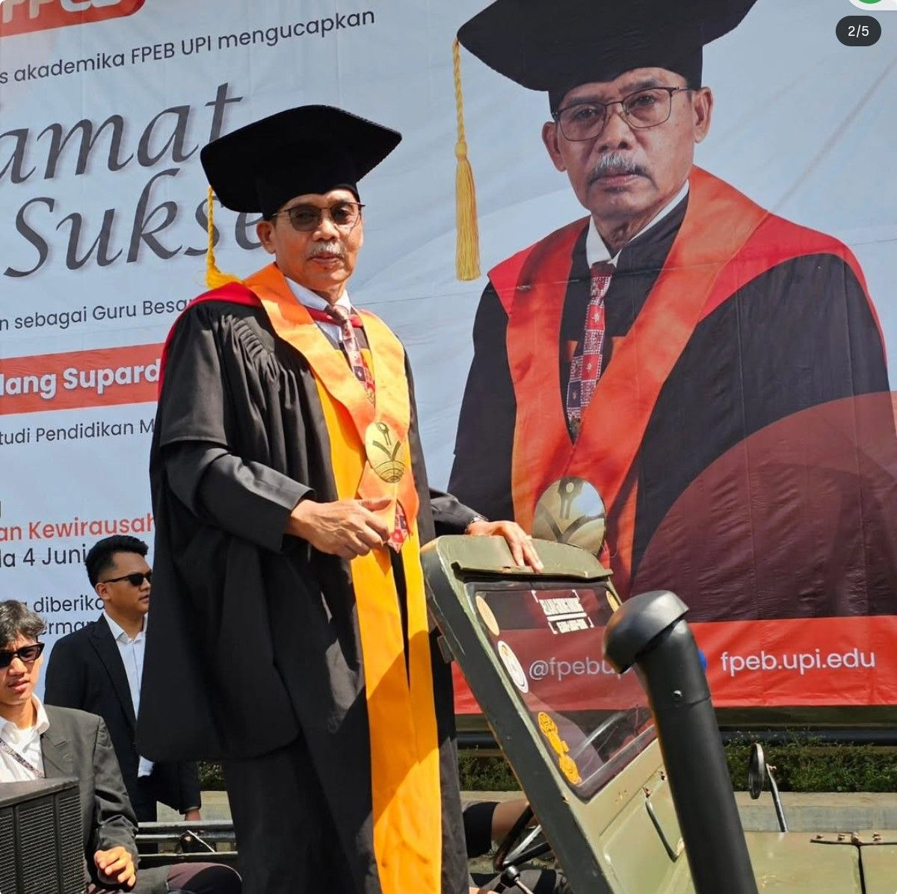

NIM
2531105
Program Studi
Pendidikan Manajemen Perkantoran dan Layanan Bisnis
tiarabelaoktav@gmail.com


Saya, Tiara Bela Oktaviani adalah seorang gadis Sunda yang lahir dan dibesarkan di Kota Bandung. Saya memiliki jiwa yang senang akan kehangatan dan kebahagiaan, serta percaya bahwa hidup di dunia hanyalah sementara. Oleh karena itu, saya berusaha mengisi kehidupan dengan hal-hal yang bermanfaat bagi sesama.
Menjadi seorang pendidik merupakan salah satu cara saya untuk berbagi ilmu, menebarkan kebaikan, dan memberikan manfaat yang diharapkan dapat menjadi bekal di dunia maupun di akhirat.
Saat ini, saya sedang menjalani Praktik Pengalaman Lapangan (PPL) dalam Program Pendidikan Profesi Guru (PPG) di SMKN 1 Bandung sebagai bagian dari proses pengembangan kompetensi dan pengalaman profesional saya sebagai calon pendidik. Melalui kesempatan ini, saya terus belajar untuk menjadi guru yang tidak hanya mampu mengajar, tetapi juga menginspirasi dan memberikan dampak positif bagi peserta didik.
— Tiara Bela Oktaviani
Inspirasi saya menjadi guru berasal dari pengalaman mengajar anak-anak yang hidup dengan berbagai keterbatasan, namun memiliki semangat belajar yang tinggi. Kegigihan mereka mengajarkan saya arti perjuangan, rasa syukur, dan empati. Pengalaman tersebut semakin menguatkan keinginan saya untuk berkontribusi dalam dunia pendidikan dan membantu setiap anak memperoleh kesempatan belajar yang terbaik.
Tujuan saya menjadi guru adalah menebarkan manfaat dan kebaikan melalui pendidikan. Saya ingin mendampingi peserta didik dalam proses belajar dan tumbuh menjadi pribadi yang percaya diri, berkarakter, serta memiliki kepedulian terhadap sesama. Saya percaya bahwa setiap anak memiliki potensi berharga. Saya berharap dapat memberikan kontribusi bermakna bagi masyarakat dan menjadi bagian dari upaya mencerdaskan bangsa.
Saya lahir dan besar di Kota Bandung, sebuah kota yang dikenal dengan kekayaan kuliner serta budaya Sundanya yang begitu kuat. Keunikan Bandung tidak hanya terletak pada beragam makanan khas seperti batagor, siomay, surabi, dan seblak, tetapi juga pada nilai-nilai budaya yang masih dijaga.
Sebagai putri daerah Sunda, saya memiliki kecintaan yang mendalam terhadap budaya Sunda mulai dari bahasa, seni, adat istiadat, hingga kesopanan dan keramahan yang menjadi ciri khas. Bagi saya, budaya Sunda bukan sekadar warisan, melainkan identitas yang membentuk cara berpikir, bersikap, dan berinteraksi.
Keberagaman kuliner dan kekayaan budaya ini menjadi sumber inspirasi bagi saya untuk terus menghargai tradisi dan memperkenalkan budaya Sunda kepada generasi muda.

Guru Pamong SMKN 1 Bandung
Beliau adalah sosok pendidik yang hangat, ramah, dan inspiratif. Selama pendampingan, saya banyak belajar cara beliau mengajar yang membuat peserta didik aktif dan antusias. Cara beliau berkomunikasi yang santun dan nyaman membuat saya memahami pentingnya membangun hubungan positif.

Dosen Pamong PPG
Beliau adalah sosok akademisi yang berwawasan luas, profesional, dan inspiratif. Melalui bimbingan yang diberikan, saya terdorong untuk terus belajar, berpikir kritis, dan mengembangkan kemampuan diri agar mampu menjadi guru adaptif. Dedikasi beliau menjadi teladan memotivasi saya.
Kumpulan hasil kerja, perangkat pembelajaran, dan dokumentasi yang telah saya susun selama mengikuti program Pendidikan Profesi Guru (PPG) di Semester 1.
Pelaksanaan Praktik Pengalaman Lapangan (PPL) selama satu semester ini menjadi pengalaman yang sangat berharga dalam perjalanan saya sebagai calon pendidik. Selama proses ini, saya belajar mengelola diri dalam berbagai aspek, mulai dari manajemen waktu, menghadapi berbagai kondisi yang tidak selalu berjalan sesuai rencana, hingga mengendalikan emosi dalam menjalankan tanggung jawab sebagai calon guru.
Berbagai tantangan yang saya hadapi mengajarkan saya untuk melihat setiap kesulitan sebagai bagian dari proses bertumbuh dan berkembang. Saya bersyukur karena mendapatkan banyak ilmu dan pengalaman dari guru pamong, peserta didik, teman-teman seperjuangan, serta keluarga yang senantiasa memberikan dukungan.
Selain pengalaman profesional, PPL juga menjadi sarana pembelajaran spiritual. Saya belajar untuk lebih bersabar, bersyukur, dan bertawakal kepada Allah SWT. Pengalaman ini menguatkan keyakinan saya bahwa menjadi guru bukan hanya tentang menyampaikan ilmu, tetapi menebarkan manfaat dan kebaikan. Saya berharap dapat terus berkembang menjadi pendidik yang profesional, berkarakter, dan menjadikan profesi ini sebagai jalan memperoleh keberkahan di dunia dan akhirat.
Pada Semester 2 ini, kegiatan terbagi menjadi 4 siklus pembelajaran. Berikut adalah penjelasan siklus yang ada pada file LK serta pratinjau media dan video praktik pembelajarannya.
Pada siklus pertama, pembelajaran difokuskan pada pemahaman dasar pengelolaan rapat. Melalui apersepsi video situasi rapat yang kacau, peserta didik diajak menganalisis pentingnya persiapan, penentuan agenda, pembagian peran, dan etika komunikasi. Kegiatan inti melibatkan diskusi kelompok (Collaborate and Communicate) untuk merancang persiapan menuju rapat yang profesional.
Siklus kedua melibatkan kegiatan Experiential Learning berupa praktik rapat secara langsung (luring). Peserta didik mempraktikkan keterampilan komunikasi, pembagian tugas, dan mendokumentasikan rapat melalui perekaman video. Siklus ini juga melatih empati dan kemampuan adaptasi peserta didik secara dinamis ketika menghadapi perubahan peran dan situasi secara langsung di lapangan.
Pada siklus ketiga, kegiatan difokuskan pada tata cara pengelolaan rapat online. Berpandukan LKPD digital, peserta didik mencari informasi, berdiskusi, dan bekerja sama merancang konsep acara seminar online secara komprehensif. Proses ini melatih keberanian presentasi (Public Speaking), tanggung jawab dalam peran masing-masing, serta keterampilan literasi digital.
Siklus keempat merupakan puncak dari seluruh rangkaian kegiatan berbasis proyek (PjBL). Peserta didik dalam kelompok besar mengadakan "Webinar Bersama" menggunakan perangkat digital (laptop/gawai). Proyek ini mewujudkan simulasi nyata dunia kerja, melatih kemandirian, manajemen waktu yang terstruktur, kolaborasi aktif, serta penguasaan teknologi layanan bisnis.